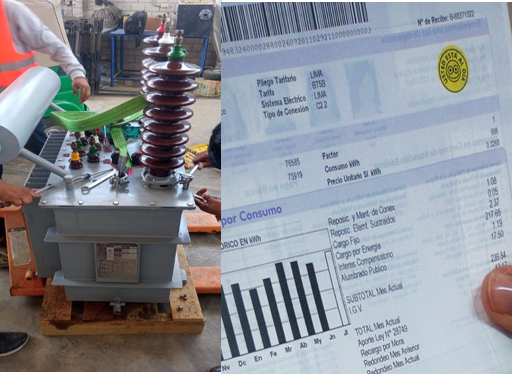

Eficiencia energetica / Auditoria - asesoria
¿Qué es la eficiencia energética eléctrica?
Es la reducción de la potencia y de la energía eléctrica sin que afecte a las actividades normales realizadas en un edificio, industria, o procesos de fabricación.
Reduce los costos tecnicos, economicos y ecologicos.
La eficiencia energetica reduce la potencia, energia activa y reactiva.
Los metodos para conseguir la eficiencia energetica son:
compensacion de la energia reactiva.
Disminucion de la maxima demanda.
Control de los armonicos (calidad de onda)
Analisis tarifario, Capacidad de los transformadores, motores y lineas
Perdidas de energia y paradas inesperadas de la produccion.
Una asesoria-auditoría energética es una de las formas más inteligentes, prácticas y eficientes de reducir el importe de la factura mensual de tu empresa.
La asesoría energética se puede llevar a cabo tanto para empresas como para hogares, analizando el estado y nivel de eficiencia actual. Con unos cambios podemos empezar a ahorrar. ¿Quieres conocer todas sus ventajas?
¿En qué consiste una auditoria-asesoría energética?
Una auditoría energética es obtener todos los datos necesarios que ayuden a detectar para subsanar posteriormente cualquier tipo de problema que afecte al consumo energético de la empresa. De esta forma, se podrán tomar medidas de eficiencia energética que puedan mejorar el rendimiento del negocio y disminuir el gasto de energía reflejado mensualmente en las facturas de luz.
Estas auditorías son realizadas por un asesor energético profesional que se encuentra capacitado para saber reconocer los puntos débiles de su instalación Electrica.
¿Quiénes pueden optar por una asesoría energética?
A pesar de que suelen realizarse en fábricas, fundos y edificios grandes, es posible hacerlo también en viviendas o comunidades, CC.PP que quieran analizar su consumo y ahorrar en sus suministros eléctricos.
Asesoria en Tarifas
Se realizan las mediciones con equipos que midan perfiles de carga.
Se realiza un diagnostico de la situacion tarifaria actual.
Simulacion de todas las opciones tarifarias con los posibles pagos y luego se selecciona la mejor tarifa.
Evaluacion economica del cambio de opcion tarifaria.
Asesoramiento y gestión para el cambio de la tarifa con el concesionario de distribución.
Seguridad y gestión de los riesgos
Las auditorías de seguridad periódicas de su instalación y de los equipos de manipulación son la forma más eficaz de prevenir el envejecimiento de los equipos y por tanto, de limitar el posible impacto negativo en su producción. Las auditorías son importantes tanto en el control o la reforma de una instalación existente como en el diseño de una nueva.
Diagnóstico de averías
Podemos ayudarle a resolver problemas que podrían pillarle desprevenido. si tiene un problema con su instalación electrica, nuestros expertos reaccionarán rápidamente: le ofrecemos un diagnóstico de la avería y las soluciones adecuadas.
Optimización del proceso
El ajuste fino forma parte integral de las buenas prácticas operativas. Nuestros especialistas tienen una amplia experiencia y ayudan a nuestros clientes a optimizar el rendimiento y la calidad de sus productos.
Control del rendimiento
Los controles periódicos garantizan la calidad de su producción. Tras la auditoría, nuestros expertos le proporcionarán un informe detallado y completo que incluye un análisis de las deficiencias de rendimiento, un plan de mejora continua y un seguimiento a largo plazo.